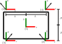
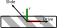

How To Derive Kinematics for Wheeled Mobile Robots
Overview
A practical approach to deriving kinematics for wheeled robots.
Transforms and Adjoints Between Frames
Label the body frame and each wheel frame. Find the transformation matrices and adjoints from wheel frame to the body frame
- Write the transforms from each wheel frame to the body frame
- Write the adjoints from each wheel frame to the body frame
- Write the inverse of the adjoints
Review of Transforms and Adjoints in 2D
A 2D transformation matrix, which can perform rotations and translations
\[\begin{equation} T(\theta, x, y) = \begin{bmatrix} \cos\theta & -\sin\theta & x \\ \sin\theta & \cos\theta & y \\ 0 & 0 & 1 \end{bmatrix}. \end{equation} \]The inverse transformation matrix is
\[\begin{align} T^{-1}(\theta,x,y)&= \begin{bmatrix} \cos\theta & \sin\theta & -x\cos\theta - y\sin\theta \\ -\sin\theta & \cos\theta & -y\cos\theta+x\sin\theta \\ 0 & 0 & 1 \end{bmatrix}\\ &= T(-\theta, -x\cos\theta - y\sin\theta, -y\cos\theta + x\sin\theta) \end{align} \]We write \(T_{ij} = T(\theta, x, y)\) to indicate the transform from frame \(\{j\}\) coordinates to frame \(\{i\}\) coordinates.
The 2D Adjoint, which converts twists in one frame to another frame is
\[\begin{equation} A(\theta, x, y) = \begin{bmatrix} 1 & 0 & 0 \\ y & \cos\theta & -\sin\theta \\ -x & \sin\theta & \cos\theta \end{bmatrix}. \end{equation} \]The inverse of the 2D adjoint is foudn by directly applying the Adjoint equation above to the inverse transformation
\[\begin{align} A^{-1}(\theta,x,y) &= A(-\theta, -x\cos\theta - y\sin\theta, -y\cos\theta + x\sin\theta) \\ &=\begin{bmatrix} 1 & 0 & 0 \\ -y\cos\theta + x\sin\theta & \cos\theta &\sin\theta \\ x\cos\theta+y\sin\theta & -\sin\theta & \cos\theta \end{bmatrix} \end{align} \]Example: Four Wheel Car

The Transformation matrices are:
\[\begin{align} \begin{matrix} T_{b1}(0, L, D) & T_{b2}(0,L, -D) \\ T_{b3}(0, -L, -D) & T_{b4}(0,-L, D) \end{matrix} \end{align} \]The Adjoints are
\[\begin{align} A_{b1} = \begin{bmatrix} 1 & 0 & 0 \\ D & 1 & 0\\ -L & 0 & 1 \end{bmatrix} \end{align} \] \[\begin{align} A_{b2} = \begin{bmatrix} 1 & 0 & 0 \\ -D & 1 & 0\\ -L & 0 & 1 \end{bmatrix} \end{align} \] \[\begin{align} A_{b3} = \begin{bmatrix} 1 & 0 & 0 \\ -D & 1 & 0\\ L & 0 & 1 \end{bmatrix} \end{align} \] \[\begin{align} A_{b4} = \begin{bmatrix} 1 & 0 & 0 \\ D & 1 & 0\\ L & 0 & 1 \end{bmatrix} \end{align} \]The inverse adjoints are
\[\begin{equation} A_{1b}= \begin{bmatrix} 1 & 0 & 0 \\ -D & 1 & 0 \\ L & 0 & 1 \end{bmatrix} \end{equation} \] \[\begin{equation} A_{2b}= \begin{bmatrix} 1 & 0 & 0 \\ D & 1 & 0 \\ L & 0 & 1 \end{bmatrix} \end{equation} \] \[\begin{equation} A_{3b}= \begin{bmatrix} 1 & 0 & 0 \\ D & 1 & 0 \\ -L & 0 & 1 \end{bmatrix} \end{equation} \] \[\begin{equation} A_{4b}= \begin{bmatrix} 1 & 0 & 0 \\ -D & 1 & 0 \\ -L & 0 & 1 \end{bmatrix} \end{equation} \]Write Body Frame Twists in Each Wheel Frame
Let \(V_b = \begin{bmatrix}\dot{\theta} \\ v_x \\ v_y \end{bmatrix}\) and \(V_i = \begin{bmatrix}\dot{\theta} \\ v_{xi} \\ v_{yi}\end{bmatrix}\)
Then \(V_i = A_{ib}V_b\)
These equations map the body twist to the velocities at each wheel, and thus tell you how the wheels must move in order to achieve a desired body twist.
Example: Four Wheel Car
Wheel 1
\[\begin{align} V_1 &= A_{1b}V_b \\ \begin{bmatrix} \dot{\theta} \\ v_{x1}\\ v_{y1} \end{bmatrix} &= \begin{bmatrix} 1 & 0 & 0 \\ -D & 1 & 0 \\ L & 0 & 1 \end{bmatrix} \begin{bmatrix} \dot{\theta}\\ v_x \\ v_y \end{bmatrix} = \begin{bmatrix} \dot{\theta} \\ -D\dot{\theta} + v_x\\ L\dot{\theta} + v_y \end{bmatrix} \end{align} \]Wheel 2
\[\begin{align} V_2 &= A_{2b}V_b \\ \begin{bmatrix} \dot{\theta} \\ v_{x2}\\ v_{y2} \end{bmatrix} &= \begin{bmatrix} 1 & 0 & 0 \\ D & 1 & 0 \\ L & 0 & 1 \end{bmatrix} \begin{bmatrix} \dot{\theta}\\ v_x \\ v_y \end{bmatrix} = \begin{bmatrix} \dot{\theta} \\ D\dot{\theta}+v_x\\ L\dot{\theta}+v_y \end{bmatrix} \end{align} \]Wheel 3
\[\begin{align} V_3 &= A_{3b}V_b \\ \begin{bmatrix} \dot{\theta} \\ v_{x3}\\ v_{y3} \end{bmatrix} &= \begin{bmatrix} 1 & 0 & 0 \\ D & 1 & 0 \\ -L & 0 & 1 \end{bmatrix} \begin{bmatrix} \dot{\theta}\\ v_x \\ v_y \end{bmatrix} = \begin{bmatrix} \dot{\theta} \\ D\dot{\theta}+v_x\\ -L\dot{\theta}+v_y \end{bmatrix} \end{align} \]Wheel 4
\[\begin{align} V_4 &= A_{4b}V_b \\ \begin{bmatrix} \dot{\theta} \\ v_{x4}\\ v_{y4} \end{bmatrix} &= \begin{bmatrix} 1 & 0 & 0 \\ -D & 1 & 0 \\ -L & 0 & 1 \end{bmatrix} \begin{bmatrix} \dot{\theta}\\ v_x \\ v_y \end{bmatrix} = \begin{bmatrix} \dot{\theta} \\ -D\dot{\theta} + v_x \\ -L\dot{\theta} + v_y \end{bmatrix} \end{align} \]Wheels
Each wheel type has controls and constraints. The controls The constraints also depend on assumptions made (such as no-slip). These wheel models determine how each wheel can move. By substituting the wheel constraints into the wheel-body-twist equations and solving for the wheel variables we determine
- What controls are needed to achieve a given twist
- What twists are achievable and what are unobtainable
Conventional Wheel
Assumptions:
- No slip
- No slide
Wheel Frame:
- Rotates around y axis
- positive rotation yields positive x translation
- The rotational velocity of the wheel is \(\dot{\phi}_i\)
The twist in the wheel frame is related to the control by the following equation:
\[\begin{equation} \begin{bmatrix} v_{xi} \\ v_{yi} \end{bmatrix} = \begin{bmatrix} r \dot{\phi}_i \\ 0 \end{bmatrix} \end{equation} \]- If the wheel's rotational velocity is actuated, we set \(\dot{\phi}_i = u_i\)
Mecanum and Omni Wheels
A mecanum wheel is driven via rotation along its y axis and it slides along a vector offset from its y axis by some angle \(\gamma\) (see figure below)

The angle \(\gamma\) determines which direction the wheel is free to slide in: when \(\gamma = 0\) the wheel is called an omni wheel. Mecanum wheels typically have angles of \(\gamma = 45^{\circ}\) (See Lynch, Park 2017).
Let \(\dot{\phi}_i\) be the rotational speed of the wheel and \(v_{si}\) be the speed in the sliding direction. The velocity of the wheel is related to its sliding and rotational velocities by
\[\begin{equation} \begin{bmatrix} v_{xi}\\ v_{yi} \end{bmatrix} = \begin{bmatrix} r\dot{\phi}_i - v_{si}\sin\gamma \\ v_{si}\cos\gamma \end{bmatrix}. \end{equation} \]- If the wheel's rotational velocity is actuated, we set \(\dot{\phi}_i = u_i\)
- Typically, the wheel's velocity in the sliding direction is not actuated
Steered Wheel
A steered wheel is a conventional wheel whose angle relative to the chassis is variable \(\psi_i\). The wheel rolls without slipping along a vector in the \(\psi_i\) direction.
\[\begin{equation} \begin{bmatrix} v_{xi}\\ v_{yi} \end{bmatrix} = \begin{bmatrix} r \dot{\phi}_i \cos\psi_i\\ r \dot{\phi}_i \sin\psi_i \end{bmatrix} \end{equation} \]Often an additional constraint will be placed on \(\psi\). For example, in a car with two front wheels being steered, the angle of the left and right wheels is related by a constraint (often implemented as a mechanical linkage).
Additional Constraints
- Additional constraints can be added, for example we can necessitate that two wheels
Example: Car with Four Mecanum Wheels
Assume the car has four actuated mecanum wheels. Substitute the mecanum wheel equations into the equations for the twist and solve for \(u_i\) and \(v_{si}\)
Wheel 1
This wheel has a roller angle of \(\gamma = -\frac{\pi}{4}\)
\[\begin{align} \begin{bmatrix} \dot{\theta} \\ r \dot{\phi}_1 - v_{s1}\sin\frac{-\pi}{4}\\ v_{s1}\cos\frac{-\pi}{4} \end{bmatrix} &= \begin{bmatrix} \dot{\theta} \\ -D\dot{\theta} + v_x\\ L\dot{\theta} + v_y \end{bmatrix}\\ \begin{bmatrix} \dot{\phi}_1 \\ v_{s1} \end{bmatrix} &= \frac{1}{r} \begin{bmatrix} -L - D & 1 & -1 \\ r L\sqrt{2} & 0 & r \sqrt{2} \end{bmatrix} \begin{bmatrix} \dot{\theta}\\ v_x \\ v_y \end{bmatrix} \end{align} \]Wheel 2
This wheel has a roller angle of \(\gamma = \frac{\pi}{4}\)
\[\begin{align} \begin{bmatrix} \dot{\theta} \\ r \dot{\phi}_2 - v_{s2}\sin\frac{\pi}{4}\\ v_{s2}\cos\frac{\pi}{4} \end{bmatrix} &= \begin{bmatrix} \dot{\theta} \\ D\dot{\theta}+v_x\\ L\dot{\theta}+v_y \end{bmatrix}\\ \begin{bmatrix} \dot{\phi}_2 \\ v_{s2} \end{bmatrix} &= \frac{1}{r} \begin{bmatrix} L+D & 1 & 1\\ r L \sqrt{2} & 0 & r\sqrt{2} \end{bmatrix} \begin{bmatrix} \dot{\theta}\\ v_x \\ v_y \end{bmatrix} \end{align} \]Wheel 3
This wheel has a roller angle of \(\gamma = \frac{-\pi}{4}\)
\[\begin{align} \begin{bmatrix} \dot{\theta} \\ r \dot{\phi}_3 - v_{s3}\sin\frac{-\pi}{4}\\ v_{s3}\cos\frac{-\pi}{4} \end{bmatrix} &= \begin{bmatrix} \dot{\theta} \\ D\dot{\theta}+v_x\\ -L\dot{\theta}+v_y \end{bmatrix}\\ \begin{bmatrix} \dot{\phi}_3 \\ v_{s3} \end{bmatrix} &= \frac{1}{r} \begin{bmatrix} L+D & 1 & -1\\ -r L\sqrt{2} & 0 & r\sqrt{2} \end{bmatrix} \begin{bmatrix} \dot{\theta}\\ v_x \\ v_y \end{bmatrix} \end{align} \]Wheel 4
This wheel has a roller angle of \(\gamma = \frac{\pi}{4}\)
\[\begin{align} \begin{bmatrix} \dot{\theta} \\ r \dot{\phi}_4 - v_{s4}\sin\frac{\pi}{4}\\ v_{s4}\cos\frac{\pi}{4} \end{bmatrix} &= \begin{bmatrix} \dot{\theta} \\ -D\dot{\theta} + v_x \\ -L\dot{\theta} + v_y \end{bmatrix}\\ \begin{bmatrix} \dot{\phi}_4 \\ v_{s4} \end{bmatrix} &= \frac{1}{r} \begin{bmatrix} -L-D & 1 & 1 \\ -r L \sqrt{2} & 0 & r\sqrt{2} \end{bmatrix} \begin{bmatrix} \dot{\theta}\\ v_x \\ v_y \end{bmatrix} \end{align} \]Gather everything into a single motion equation
\[\begin{align} \begin{bmatrix} \dot{\phi}_1\\\dot{\phi}_2\\\dot{\phi}_3\\\dot{\phi}_4 \\v_{s1}\\v_{s2}\\v_{s3}\\v_{s4} \end{bmatrix} &= \frac{1}{r} \begin{bmatrix} -L-D & 1 & -1 \\ L + D & 1 & 1 \\ L + D & 1 & -1 \\ -L - D & 1 & 1\\ L\sqrt{2} & 0 & \sqrt{2}\\ L\sqrt{2} & 0 & \sqrt{2}\\ - L\sqrt{2} & 0 & \sqrt{2}\\ - L\sqrt{2} & 0 & \sqrt{2}\\ \end{bmatrix} \begin{bmatrix} \dot{\theta}\\ v_x \\ v_y \end{bmatrix} \end{align} \]The equation above tells us how the wheels will rotate and slide, given a twist applied to the body of the robot.
Controls
Assume we control the rotation but not the sliding of each wheel, letting \(\dot{\phi}_i = u_i\). We can then partition the motion equation into two parts, one for control the other for sliding:
\[\begin{align} u &= H V_b\\ \begin{bmatrix} u_1\\u_2\\u_3\\u_4 \end{bmatrix} &= \frac{1}{r} \begin{bmatrix} -L-D & 1 & -1 \\ L + D & 1 & 1 \\ L + D & 1 & -1 \\ -L - D & 1 & 1\\ \end{bmatrix} \begin{bmatrix} \dot{\theta}\\ v_x \\ v_y \end{bmatrix}\\ v_s &= R V_b \\ \begin{bmatrix} v_{s1}\\v_{s2}\\v_{s3}\\v_{s4} \end{bmatrix} &= \begin{bmatrix} L\sqrt{2} & 0 & \sqrt{2}\\ L\sqrt{2} & 0 & \sqrt{2}\\ - L\sqrt{2} & 0 & \sqrt{2}\\ - L\sqrt{2} & 0 & \sqrt{2}\\ \end{bmatrix} \begin{bmatrix} \dot{\theta}\\ v_x \\ v_y \end{bmatrix} \end{align} \]Notice that in this example, \(H\) has full column rank (a rank of 3 in this case). Therefore the dimension of the Null Space of H is 0, implying that only the 0 twist results in the 0 control vector and that every body twist maps to a unique control vector (and therefore wheel speed). Since every body twist maps to a unique control vector, there exists a control vector for every body twist and therefore the robot can move in any body twist direction, hence it is omnidirectional.
If the null space of \(H\) were not empty, there would exist multiple non-zero twists that would map to a control vector of zero: these twists (other than the zero twist) would involve pure slipping and we have no way of actuating the slipping, thus they would be unachievable by controlling the wheel velocities.
Notice that \(R\), in this case is rank(2), and it's null space is \(\begin{bmatrix}0 \\ v_x \\ 0\end{bmatrix}\). This means that a body twist with velocity only in the \(x\) direction results in no slipping of the wheels.
Example: Car with Four Conventional Wheels
Wheel one is:
\[\begin{align} \begin{bmatrix} \dot{\theta} \\ r \dot{\phi}_1 \\ 0 \end{bmatrix} = \begin{bmatrix} \dot{\theta} \\ -D\dot{\theta} + v_x\\ L\dot{\theta} + v_y \end{bmatrix} \end{align} \]Therefore:
\[\begin{equation} \begin{bmatrix} \dot{\phi}_1 \\ 0 \end{bmatrix} = \begin{bmatrix} \frac{-D}{r} & \frac{1}{r} & 0\\ L & 0 & 1 \end{bmatrix} \begin{bmatrix} \dot{\theta}\\ v_x \\ v_y \end{bmatrix} \end{equation} \]The other wheels are similar, leading to the following sets of equations
\[\begin{align} \dot{\phi} &= H V_b \\ \begin{bmatrix} \dot{\phi}_1\\ \dot{\phi}_2\\ \dot{\phi}_3\\ \dot{\phi}_4\\ \end{bmatrix} &= \frac{1}{r} \begin{bmatrix} -D & 1 & 0\\ D & 1 & 0\\ D & 1 & 0\\ -D & 1 & 0\\ \end{bmatrix} \begin{bmatrix} \dot{\theta}\\ v_x \\ v_y \end{bmatrix} \end{align} \]and
\[\begin{align} 0 &= QV_b\\ \begin{bmatrix} 0\\0\\0\\0 \end{bmatrix} &= \begin{bmatrix} L & 0 & 1 \\ L & 0 & 1 \\ -L & 0 & 1 \\ -L & 0 & 1 \end{bmatrix} \begin{bmatrix} \dot{\theta}\\ v_x \\ v_y \end{bmatrix} \end{align} \]To satisfy the constraints, \(V_b\) must be in the Null space of \(Q\) which is \(\begin{bmatrix}0\\1\\0\end{bmatrix}\), thus only translating in the \(x\) direction is permitted.
Control to Twist Relationship
The control to twist relationship is found by solving \(u = H V_b\) for \(V_b\).
- If \(u\) is in the column space of \(H\) then \(V_b = H^{\dagger}u\), where \(H^{\dagger}\) is the Moore-Penrose Pseudoinverse.
Example: Four Omni-Directional Wheels
\[\begin{align} V_b = H^{\dagger}u &= \frac{1}{4} \begin{bmatrix} -\frac{1}{D+L} & \frac{1}{D+L} & \frac{1}{D+L} & -\frac{1}{D+L} \\ 1 & 1 & 1 & 1\\ -1 & 1 & -1 & 1 \end{bmatrix} \begin{bmatrix} u_1 \\ u_2 \\ u_3 \\ u_4 \end{bmatrix} \end{align} \]The rank of \(H^{\dagger}\) is 3, which means its its Null space dimension is 1. \(\mathrm{Null}(H^{\dagger})\) is spanned by \(\begin{bmatrix}-1 \\ -1 \\ 1 \\1\end{bmatrix}\) Which corresponds to both front wheels spinning in the opposite direction from the rear wheels. This motion, intuitively, would put the chassis under compression or tension along the x axis and result in 0 net motion. If \(u\) is in the null space of \(H^{\dagger}\) it is also in the null space of \(H^T\), which means it is orthogonal to every vector in the column space of \(H\), and therefore, there is no solution to \(u = H V_b\) in this case. In other words, there is no body twist that can be applied to the robot that makes the front wheels spin in the opposite direction of the rear wheels.
To see how the controls affect slipping, we write \(v_s = RH^{\dagger}u\): If you perform this operation, you will find that \(Q=RH^{\dagger}\) is a \(4\times4\) matrix with rank 2. Its nullspace is spanned by \(\begin{bmatrix}0\\0\\1\\1\end{bmatrix}\) and \(\begin{bmatrix}1\\1\\0\\0\end{bmatrix}\). Thus there is no sideways sliding whenever the front wheels are moving at the same speed and the rear wheels are moving at the same speed.
Incorporating \(\dot{q}\)
Since \(\dot{q}\) is the twist corresponding to a frame located at the body frame but co-located at the world frame, we can use the relationship \(\dot{q} = A(\theta, 0, 0)V_b\) to relate the equations above to this velocity.
Example: Four wheel Robot
\[\begin{align} \begin{bmatrix} \dot{\theta}\\ \dot{x}\\ \dot{y} \end{bmatrix} &= \begin{bmatrix} 1 & 0 & 0 \\ 0 & \cos\theta & -\sin\theta \\ 0 & \sin\theta & \cos\theta \end{bmatrix} \begin{bmatrix} -\frac{1}{D+L} & \frac{1}{D+L} & \frac{1}{D+L} & -\frac{1}{D+L} \\ 1 & 1 & 1 & 1\\ -1 & 1 & -1 & 1 \end{bmatrix} \begin{bmatrix} u_1\\u_2\\u_3\\u_4 \end{bmatrix}\\ &= \frac{r}{4} \begin{bmatrix} -\frac{1}{D+L} & \frac{1}{D+L} & \frac{1}{D+L} & -\frac{1}{D+L}\\ \cos\theta + \sin\theta & \cos\theta-\sin\theta & \cos\theta + \sin\theta & \cos\theta-\sin\theta \\ \sin\theta - \cos\theta & \cos\theta+\sin\theta & \sin\theta - \cos\theta & \cos\theta+\sin\theta \\ \end{bmatrix} \begin{bmatrix} u_1\\u_2\\u_3\\u_4 \end{bmatrix} \end{align} \]The Unicycle Robot
- A simple model for a mobile robot is a single wheel, rolling on the plane
- Its steering angle and rotational velocity can be controlled.
- It rolls without slipping
The method above is likely more complicated than needed to derive the kinematics for this system, but here goes:
There is only one wheel, its reference frame is coincident with the body frame, so all transforms/adjoints are the identity matrix.
We will let \(\psi_1 = 0\), since the whole chassis of the robot is the wheel, hence the wheel cannot have an angle independent of the chassis angle.
The body frame twist in the wheel frame
\[\begin{equation} \begin{bmatrix} \dot{\theta}\\ v_{x1}\\ v_{y1} \end{bmatrix} = \begin{bmatrix} \dot{\theta}\\ v_x\\ v_y \end{bmatrix} \end{equation} \]Substituting in the wheel constraints, with \(\psi_1 = 0\) yields
\[\begin{equation} \begin{bmatrix} \dot{\theta}\\ \dot{\phi}_1\\ 0 \end{bmatrix}= \begin{bmatrix} \dot{\theta}\\ \frac{1}{r}v_x\\ v_y \end{bmatrix} \end{equation} \]If our controls are \(u_1 = \dot{\theta}\) and \(u_2 = \dot{\phi_1}\) we then have the control equation
\[\begin{equation} \begin{bmatrix} u_1\\ u_2 \end{bmatrix} = \begin{bmatrix} 1 & 0 & 0\\ 0 & \frac{1}{r} & 0\\ \end{bmatrix} \begin{bmatrix} \dot{\theta}\\ v_x \\ v_y \end{bmatrix} \end{equation} \]and the constraint equation \(0 = v_y\).
The constraints indicate that the \(v_y\) velocity is always 0, hence we can never accomplish a \(y\) velocity in a body twist and therefore the robot is not omni-directional.
Taking the pseudo-inverse of the control matrix yields
\[\begin{bmatrix} \dot{\theta}\\ v_x \\ v_y \end{bmatrix} = \begin{bmatrix} 1 & 0\\ 0 & r \\ 0 & 0 \end{bmatrix} \begin{bmatrix} u_1\\ u_2 \end{bmatrix}\], from which we can see that no control can every give us a \(v_y\) that is non-zero.
Finally, we should convert the body twist into \(\dot{q}\):
\[\begin{align} \begin{bmatrix} \dot{q}\\ \dot{x}\\ \dot{y} \end{bmatrix} &= \begin{bmatrix} 1 & 0 & 0 \\ 0 & \cos\theta & -\sin\theta \\ 0 & \sin\theta & \cos\theta \end{bmatrix} \begin{bmatrix} \dot{\theta}\\ v_x\\ v_y \end{bmatrix}\\ &= \begin{bmatrix} 1 & 0 & 0 \\ 0 & \cos\theta & -\sin\theta \\ 0 & \sin\theta & \cos\theta \end{bmatrix} \begin{bmatrix} 1 & 0\\ 0 & r \\ 0 & 0 \end{bmatrix} \begin{bmatrix} u_1\\ u_2 \end{bmatrix}\\ &=\begin{bmatrix} 1 & 0 \\ 0 & r \cos\theta \\ 0 & r \sin\theta \end{bmatrix} \begin{bmatrix} u_1\\ u_2 \end{bmatrix} \end{align} \]
Note that in the derivation above, we derived \(\dot{q}\) in two steps: first (see 7) we mapped control inputs to body twists. Then (see step 8) we mapped body twists to \(\dot{q}\).
When we map the control inputs to the body twists, we see that we actually only can specify \(\dot{\theta}\) and \(v_x\), whereas \(v_y = 0\).
There are many robots whose mappings to the body twist also have this property, even though the exact mapping from control inputs to body twist is different
Thus, we can create a generalized car model simply by using the first part of step 8, (also note, we will drop \(v_y\) and its associated column, since it is 0
\[\begin{bmatrix} \dot{q}\\ \dot{x}\\ \dot{y} \end{bmatrix} = \begin{bmatrix} 1 & 0 \\ 0 & \cos\theta \\ 0 & \sin\theta \end{bmatrix} \begin{bmatrix} w \\ v \end{bmatrix}\\ \], where the canonical control inputs \(w = \dot{\theta}\) and \(v = v_x\) are used
Although many types of wheel configurations lead to this model, wheel configuration matters when the original inputs have constraints (such as a maximum velocity constraint). Then the different mappings from original control inputs to canonical inputs leads to different minimum and maximum values for \(w\) and \(v\).
References:
Modern Robotics: Mechanics, Planning and Control, Kevin Lynch and Frank Park, Cambridge University Press, 2017